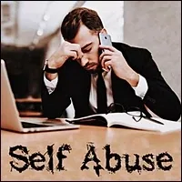

Self
Abuse
- …
Self
Abuse
- …
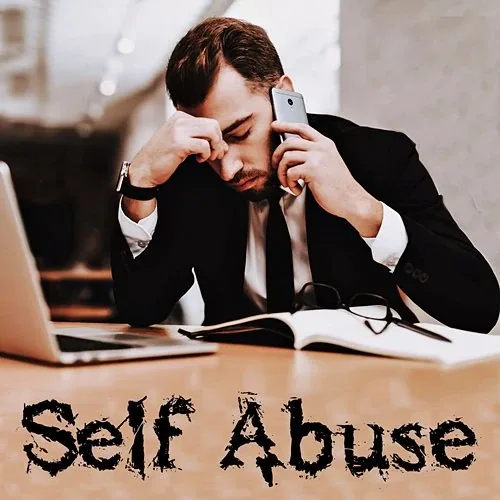
- # What's really going on?- There are so many ways to abuse yourself promoted in modern culture. As both the abused and the abuser, taking Radical Responsibility sets you into a new future. - For the abused, healing is possible. You can recover your dignity and self-worth. You can build awareness and learn new skills for relating to yourself and the world. It is not pain free, and it is worth doing (this is our opinion). We welcome you. - Being Both Abuser And The Abused - TYPES OF SELF ABUSE- Everyone has been abused. - PSYCHOLOGICAL ABUSE is when you fall down and your mother or school teacher says, "Nothing happened. It does not hurt." It is also Psychological Abuse when your mother says, "Just wait until your father gets home!" Or when your father is alcoholic and abusive and your mother does not leave him and take you with her. Psychological Abuse is when you are sent into aschool systemwhere false 'authorities' tell you what you should learn and when you should learn them, then they grade you while deceiving you about some kind of connection between 'good grades' and a 'good job'. - EMOTIONAL ABUSE is when you feel sador youfeel scaredand your father or uncle says, "Big boys don't cry. Indians feel no pain. Stop being a Scaredy Cat!" Or your mother says, "Don't spoil the mood, honey. Your make-up will run...you need to look pretty." - ENERGETIC ABUSE is when your mother or father invade your Bubble Of Space (archived — not captured)in order to control and dominate you, when your privacy is not respected, or when you are forced to bow down to hierarchical 'authorities' in institutions such as a church, school, government, or business. - PHYSICAL ABUSE is when your family and institutions feed you sugary manufactured foods full of GMO corn syrup, artificial flavors, food colorings, and preservatives, and call it 'food', or when your mother hits you with a wooden spoon or your father hits you with a belt or his hand, or a 'teacher' or 'nun' hits you with a ruler or a stick, instead of responsibly dealing with their own unconscious Aggression,Reactivity, andGremlinshit. (It is NOT true that negative attention is better than no attention at all...) - Sexual Abuse is when your are forced or seduced into sexual energy exchange or sexual contact against your own will. Sexual Abuse is media, films, porn, and computer sex that plants images in your brain that are so strong and so far away from reality that you cannot have real sex anymore. - Abuse is so rampant in the capitalist patriarchal empire that it is the standard. - Especially Sexual Abuse. - WHY IS SELF ABUSE SO WIDESPREAD AND UNSTOPPABLE IN THE- PATRIARCHY- ?- There are two main reasons: - The unspoken Rules Of Engagement in any patriarchal Gameworldstate:Men own women and children. Women and children are mere sex objects in the patriarchy. - In patriarchal culture, both women and men remain uninitiated adolescents, no matter how old they are. Authentic Adulthood Initiatory Processes - which should begin when a human being reaches eighteen years of age - were banished from the patriarchy some 6000 years ago. You are not initiated into evolutionary Adulthood. - A third reason also helps explain the question: - psychopaths (archived — not captured). The governance bodies in modern civilization are all hierarchical. This is a design error, because hierarchical power structures automatically select for psychopathic behavior.- Why? Because psychopaths are those most skilled at doing 'whatever it takes' to climb up the power structure of any hierarchy. By now this should be painfully clear. - This also models how males are sexually abused in patriarchy. To bolster their failed identity, those further up the hierarchy sexually abuse those lower in the hierarchy. Think of priests and altar boys... hidden for so many decades... - What this means is that there is no hope of creating a better world within the patriarchy. Modern culture is functioning perfectly well, exactly as designed, and defending itself with police, corporate corrupted politicians, and the military. - No matter how many good-hearted intelligent proposals are submitted to government, they will never be implemented, because creating a bright future for humanity is not on the psychopathic agenda. - Abuse is the norm in patriarchy. Healing your sexual abuse will involve you personally exiting the patriarchy. - MEN AND THE PATRIARCHY- A male baby is forced to make a choice at birth: join the patriarchy, or die. - Why die? Because there is no other place for you. If you do not fit into the patriarchy, you are on your own. - Women have no idea about the extreme pain of the sacrifice of a boy's self, vision, future, if the boy chooses to join the patriarchy. - Some men try to de-masculate themselves in whatever way they can so that even though they are in the patriarchy they do not seem to be so bad as the rest of the men. - Some mothers try to help them... What other choice does a woman have? Either she can try to destroy the boy with ridicule, aggression, fear, hatred, and revenge. Or she can over-coddle him into being a 'nice boy', someone who would - neverdo to a woman what so many men have done to her.- As a boy, you know which path your mother chose. - Having to make this patriarchy choice at birth causes such immense pain that many babies choose to die rather than endure giving up their life plan and live the false identity of being a patriarch in the patriarchy. Doctors call it 'sudden infant death syndrome' (SIDS). Now we know more about what is really going on. - Entering the patriarchy means to leave everything behind, gifts, treasures, your - Pearl, your- Bright Principles, your- Archetypal Lineage, and then try to fit in. Be like the other 'men'. Abandon your desire for Authentic- Adulthood- InitiatoryProcesses. Play your role in the mafia, or fight to rise up in the command-and-control patriarchal hierarchies in society. The boy's future is to be part of the problem on planet Earth, abandoning any hope of being part of the changes that are so desperately needed now.- By leaving behind everything of value you become small enough to fit through the ' - Eye Of The Needle' and emerge on the patriarchy side as a naked and powerless victim, facing a life of endless fighting fight for position and power in a despicable "- I win, you lose", winner-takes-all, "- Whoever dies with the most toys, wins," survival game. Since it happened so early at birth, you forget for a long time that anything else is possible.- Perhaps after decades you grow weary of being so - adaptive, being so- numb, being so- disconnected. If you do not die of addictions, diseases, or suicide, your heart may eventually cry out regardless of the consequences that come from betraying the patriarchy. You may continue to suppress your unheard and unfelt pains, or you may start asking questions that none of your friends have answers to. This can bring you to the- edgeof- modern culture. Only at its edge can you see that something else is possible.- From the view at the edge you discover that modern culture is not 'the best thing human beings ever invented' as it has been marketed to you. You see more options and somehow find a vague courage to start over. The idea comes of going back to zero, picking up what you dropped at birth, helping to create something besides capitalist patriarchal empire on Earth. But men cannot exit the patriarchy except by the same way they got in: through the - Eye Of The Needle.- This means dropping every reward the patriarchy has ever given you: position, wealth, possessions, fame, trophies, rewards... going back to the naked baby with nothing, returning to your origins and beginning again. - Nothing else will be true. No one can do this for you. Will you do it? We will see.- TRADITIONAL THERAPIES- The Team members making this website do not pretend to have researched the global field of Sexual Abuse therapies. Since the consequences of Sexual Abuse are so devastating, many people have tried and are trying a great variety of approaches. - What we do know is that modern culture has for the past Century-and-a-half been saturated with assumptions and perspectives originating in the 'Psychoanalysis' and 'Psychotherapy' as described by Sigmund Freud and Carl Jung. The best results hoped for in this psychoanalytical context is 'to understand'. The idea is that if you understand what happened to you then you can be free of it. - We are finding that intellectually understanding what happened to you is not sufficient to heal abuse. - Even 15 years of psychoanalysis does not seem to create - Healingin- 5 Bodies(physical, intellectual, emotional, energetic, and archetypal). Psychoanalysis does not seem to- Initiateyou into- Adulthood, complete your emotions, give you back your- Voiceand your- Dignity. It does not- Build-Matrixin you to take- Radical Responsibility, nor- jack-you-into- Inner Resourcesand- Outer Resourcesyou will need to provide the- Servicesto the village that you came here to deliver.- Why is psychotherapy insufficient? - Our theory is that psychotherapy is a 150 year-old technology that focuses on addressing the intellectual body. Any feelings or emotions that a Client has go unaddressed, or are even viewed as 'problematical' by the psychotherapist, and are 'suppressed' with prescriptions for psychopharmaceuticals to make the emotions go away... because the psychotherapist has not learned how to feel. - Psychotherapy does not require that a psychotherapist - Stellate their 4 Feelings Archetypes. Nor is the psychotherapist required to develope the skills to- Inner Navigatetheir own- Feelingsand- Emotions. The psychotherapist is forced to regard all these experiences with unconscious fear and absent-mindedly leaves them to fester.- The psychotherapist is therefore unable to facilitate the completion of incomplete emotions from sexual or other types of abuse, because their own emotions remain unhealed. - Something entirely different from psychotherapy is necessary to heal Sexual Abuse. - Fortunately, now, something completely different from this is possible... - PSYCHOLOGICAL ABUSE is when you fall down and your mother or school teacher says, " - # Cause No Harm- Gaian Road Teaminterview with- Rick Pursellin Bali. - Your Survival Strategies - Whatever - survival strategyyou developed, it created some way to make the abuse 'normal' so that you could survive it.- Because deep down inside, a - partof you knew that at some point, someone would see you.- Someone would know you are in there and could connect with you, and call to you, and reach out a trustworthy hand, - and help you find a way to come back out into the world as who you really are so that you could start over. - That point is now. - The important thing is that you survived. - You did whatever it took to survive. This is honorable. - Now it is time to learn whatever it takes to depend on yourself to take care of yourself around people like them. - _______ - If you have been abused... - - and our theory is that essentially everyone has been abused in some way by someone sometime - - and, if the abuse has not been healed as a matter of course during - AuthenticAdulthood and Archetypal- Initiatory- Processesthat would commence in all fierceness when you reach 18 years of age...- - which, if you are an adherent to - modern culture, will not have happened because- AdulthoodInitiations were banished from modern culture some 6000 years ago -- then, you needed to figure out some way to survive: - Sending away parts of your energetic body. - Getting revenge. - Use sexual energy to control and manipulate // White Widow - Being a ruined person. - Hiding out and being afraid. - Making yourself too ugly to be attractive. - Hating women / men. - Hating Authority. - Hierarchicalthinking. - Refusing to Stand Up. - Refusing to Stand Out. - Becoming hyper adaptive - a 'Hollow Man' charade, hiding yourself so far away that you never feel the pain - Becoming hyper arrogant - untouchable, destroying others before they can destroy you - Forgetting that it ever happened... - " - In a world where it is possible to experience something like sexual abuse, the only option for me was to forget those experiences immediately and forever. I buried them deep. It was a matter of life and death. It was a matter of my survival."- Read the whole article, titled: - ABOUT DIGNITY - Sending away parts of your - As-Ising Self Abuse - Here is what you can do to be completely healed from abuse traumas and start over in a new life, beginning now. - First understand that you cannot change what happened to you. - However, you can change your - relationshipto what happened to you.- You can take responsibility rather than being a Victim. - Working in the way recommended here will not take the abuse out of you. - This work will take you out of the abuse. - RADICAL RESPONSIBLITY- Modern culture trains us to avoid responsibility. The heroes of modern culture are those who make the most money in whatever way they can, offshore bank accounts, hide behind corporations and lobbyists and tax loopholes. Make a 'profit' by externalizing true costs to future generations, the environment, or less defended 'third-world' countries. - Us saying here that your healing and freedom lies along the path of taking responsibility for being abused probably sounds worse than insane. If so, it indicates you are using modern culture's Standard Human Intelligence Thoughtware (S.H.I.T.) about 'responsibility'. - In modern culture, 'responsibility' is regarded as a burden. If you take responsibility you will be punished. You have to pay. You will be blamed. You must clean up the mess. Anyone who takes responsibility is either stupid or naïve. You are taught that responsibility should be avoided. - It turns out that there are 5 Degrees Of Responsibility that you can take in the interactions and gameworlds of your life. - NO RESPONSIBILITYLive under a bridge or in a prison cell with 3 meals a day plus clean sheets once a week provided by the prison system. Take care of nothing. Pay for nothing. Others take care of you and you complain and blame. Keep walking away from responsibility. - CHILD RESPONSIBILITYYou make messes. Other people must clean them up. Modern culture is centered directly on Child Level Responsibility because it makes huge messes with no intention- at allof ever cleaning them up. This is our role model. Even top people in global hierarchies (church, government, corporation, education, military, medicine, etc.) are uninitiated adolescent children. - ADULT RESPONSIBILITYTake your 'fair share' of responsibility. Make sure the balance is correct according to how much you should pay and how much each of the other people should pay. If you cannot figure it out then go to court. - HIGH RESPONSIBILITYBecome more of a Guardian of spaces, relationships, and gameworlds. Sometimes you pick up the trash even if you did not drop it because it makes a nicer sidewalk. Live from the perspective that life is not always fair, and be big enough to deal with it. - RADICAL RESPONSIBILITYPlace yourself in the position that it is impossible to be a Victim. Irresponsibility is an illusion. There is no such thing as a problem until you name it that. What is, is. Everything is neutral, with no stories attached. You are the source. You get to decide. You are the cause of everything that occurs. - What is not so clear is that this Universe is a - Radically ResponsibleUniverse, waiting for Adult, Extraordinary, and Radical human beings to come out and creatively collaborate.- Yes, there is a - Path, a step-by-step progression through a Hero's Journey of Building Matrix to apply greater and greater intensities of responsibility.- It helps to understand that responsibility is consciousness in action. In other words, responsibility is applied consciousness. - What is clear is that, if you are ready to start over in your life, heading towards taking Radical Responsibility, then new skills are in order. For example: - Taking back your Center. - Taking back your Space. - Taking back your Authority. - Taking back your 5 Bodies. - Taking back your Conscious Feelings and Emotions. - Taking back your Voice. - Taking back your Gremlin (Your Gremlin, Gremlin Hunter, Gremlin Reconstruction). - Taking back your Teams. - Consciously using your 3 Powers: Declaring, Choosing, and Asking. - Conscious Will. - Consciously Holding Space and Consciously Navigating Space - Consciously generating your own personal bubble of Culture and fully respecting it. - Creating necessity for Authentic Adulthood Initiatory Processes. - Living Full Out. - High Level Fun. - Your Quest. - ENDING THE ABUSE IN 5 BODIES- TRANSFORMING THE ABUSE IN 5 BODIES- COMPLETING THE ABUSE IN 5 BODIES- SHIFTING IDENTITY- You may try to keep your 'identity' secret, or you may wear your identity on your shoulder like a brick, or like a badge on your lapel. - Whatever you identify yourself with in your Being strongly influences how the Universe interacts with you. - You can change the way the universe interacts with you by changing your identity. - However, changing your identity is not accomplished through 'positive thinking', by making 'affirmations', or even by posting notes to yourself on your refrigerator. - Identity shift occurs at the level of your Being. - Identity shift starts with - Relocating Your Point Of Origin.- The previous identity is " - I am an abused person. I have been abused. Someone abused me."- Yes, historically, this may have been the facts. - And, are you the same person now who you were back then? - If you have learned new skills, can make new experiential distinctions, activated new inner and outer resources... how could it be that you could possibly regard yourself as being the same person? - STARTING OVER- HEALING TRAUMA- WHY IS THIS WEBSITE DEDICATED TO WOMEN? - Self Abuse Transformation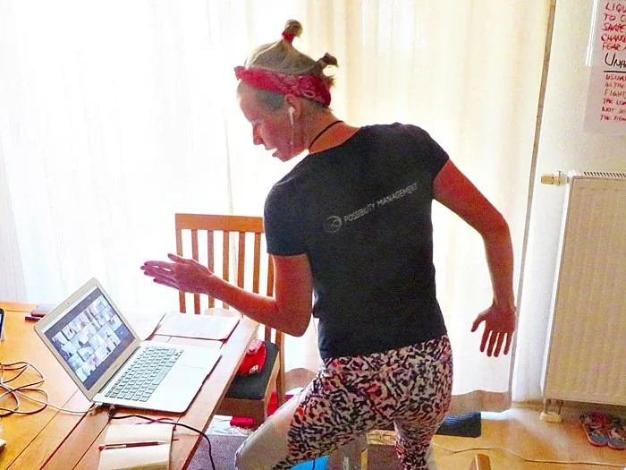
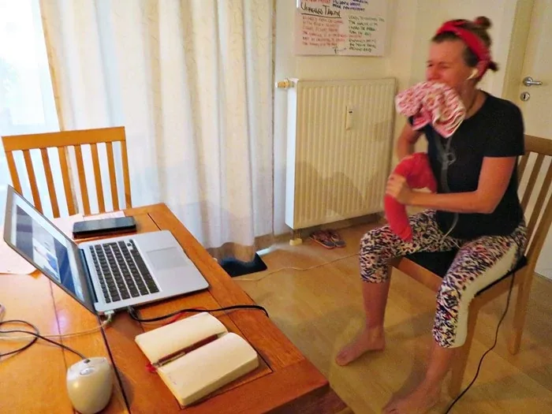
- Rage-Face Practice: To Develop Unexercised Muscles In The Face - To Have Something - Besides 'the nice face' - Rage-Face Practice Online - 'Arrrggaarrr' Practice: Using Your - Real Voiceand Fists To Wake Up And Give Your Bodies Permission To- Feel Anger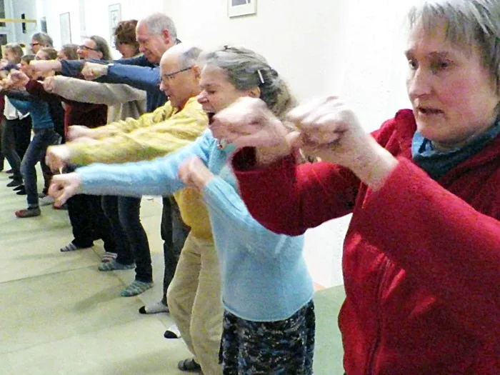
- 'Arrrggarrr' Practice: Using Your - Real Voiceand Fists To- Wake UpAnd Give Your Bodies Permission To- Feel Anger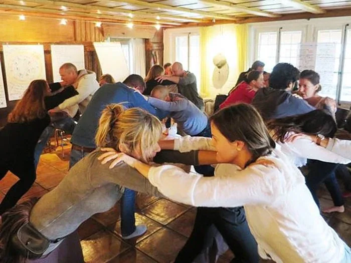
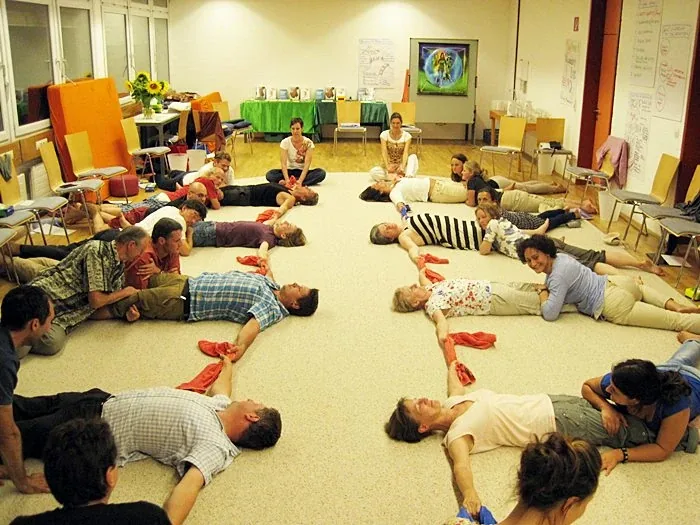
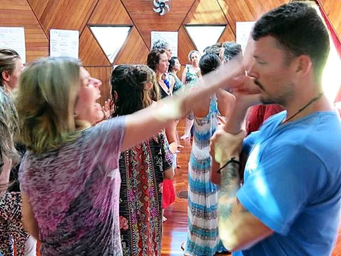
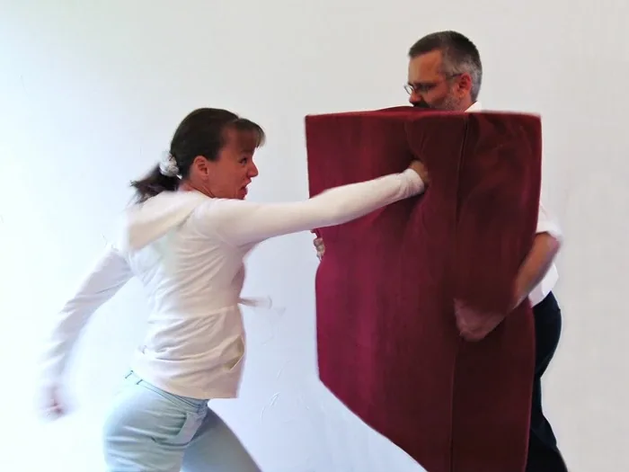
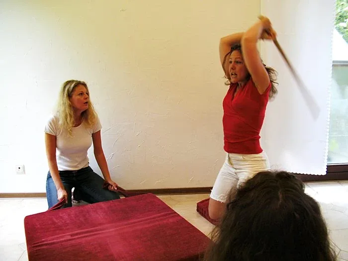
- Rage-Stick Work: For Ending The Contract And Banishing An Abuser - Rage-Stick Work: For Ending The Contract And Banishing An Abuser - Unmixing Emotions- Depression is not a - Feeling.- Depression is a Mixed - Emotion.- Emotional Depression is the result of mixing Emotional Anger with Emotional Sadness. - Mixed Emotions can be effectively - Unmixedinto their pure form where they can be- Completed.- When an Emotion is Completed, it is - As-Ised, which means it becomes integrated into your- Beingand vanishes.- WARNING: This Process is loud and intense and takes about 30-45 minutes. If your experience is not - veryloud and- veryintense and at least 30 minutes long, digging into layer after layer through your chest with your energetic fingers to the back of your ribs, scraping out the corners... over and over... and yelling or sobbing it out... then you are not actually Unmixing Your Emotions... you are just imaging that you are Unmixing Your Emotions... Not the same thing at all.- Without the - Experiential Realityof Unmixing Emotions, nothing changes.- This - Processis best done with a skilled- Possibilitatoror- Possibility Coach, at your side, or at a- Possibility Lab. - Emotional Anger Mixed With Emotional Sadness Becomes The Experience Called 'Depression'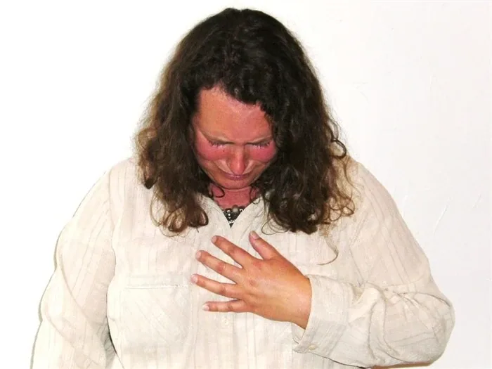
- Locating Your Mixed Emotions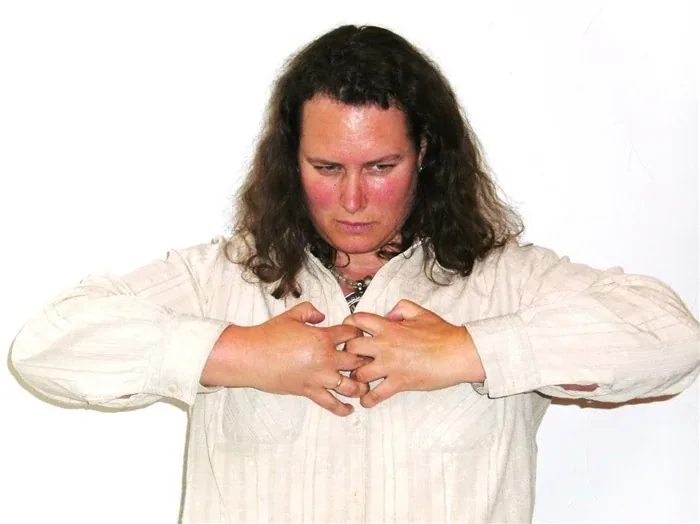
- Separating Your Mixed Emotions - Finding Your Anger - Separating Your Anger From Your Sadness - Finding Your Sadness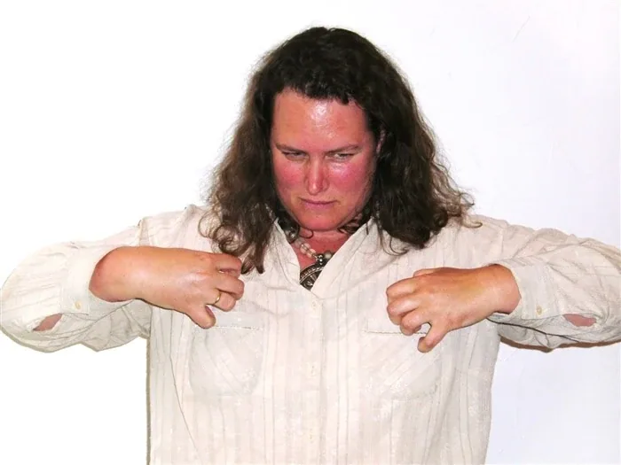
- Separating Your Sadness From Your Anger - Placing Your Anger Into Your Bones (spine, teeth, skull) Where It Belongs, And - Placing Your Sadness Into Your Liquid Parts (blood, saliva, lymph, spinal fluid, tears, organs) Where It Belongs Feels Indescribably Excellent - Living: - Your Healing And Transformation Path - These stepping-stones to healing and transforming from abuse are placed in a reasonable kind of order, but this does not mean they are your - Path. Your Path is unique, designed by Gaia and- E.C.C.O.to fit the uniqueness of your- Being.- Nonetheless, these actions are hugely effective, and can be an abundantly supportive source of - Clarityand- Possibilityfor you.- Please remember that no one can do - Healingor- Transformationsteps for you.- On the other hand, no one can stop you from doing them for yourself. - We encourage you to connect in with us and with your - Team, and be bold in your- Journey.- A new - Adultfuture awaits you, and the world is longing to receive your gifts. - Get Your Self A- Go! BookTo Document Your Transformational Path- Matrix Code - SEXABUSE.01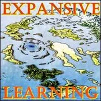
- With Regards To Healing Abuse: Exit Defensive Learning And Enter Expansive Learning- Matrix Code - SEXABUSE.02 - With Regards To Healing Abuse: Become Centered- Matrix Code - SEXABUSE.03 - With Regards To Healing Abuse: Take Back Your Attention- Matrix Code - SEXABUSE.04 - With Regards To Healing Abuse: Practice Fierce Self Observation- Matrix Code - SEXABUSE.05
- With Regards To Healing Abuse: Practice Fierce Self Observation- Matrix Code - SEXABUSE.05 - With Regards To Your Life: Take Back Your Absolute Authority- Matrix Code - SEXABUSE.06
- With Regards To Your Life: Take Back Your Absolute Authority- Matrix Code - SEXABUSE.06 - With Regards To Healing Abuse: Change Your Worldview To 3 Phase Healing- Matrix Code - SEXABUSE.07
- With Regards To Healing Abuse: Change Your Worldview To 3 Phase Healing- Matrix Code - SEXABUSE.07 - With Regards To Healing Abuse: Become Present- Matrix Code - SEXABUSE.08
- With Regards To Healing Abuse: Become Present- Matrix Code - SEXABUSE.08 - With Regards To Healing Abuse: Exit Verbal Reality And Enter Experiential Reality- Matrix Code - SEXABUSE.09 - In Order To Start Over: Shift Your Point Of Origin Into A Very Small NOW- Matrix Code - SEXABUSE.10- e.g. Take the Authority to Minimize Your NOW.
- With Regards To Healing Abuse: Exit Verbal Reality And Enter Experiential Reality- Matrix Code - SEXABUSE.09 - In Order To Start Over: Shift Your Point Of Origin Into A Very Small NOW- Matrix Code - SEXABUSE.10- e.g. Take the Authority to Minimize Your NOW.  - In Order To Start Over: Move To The New Thoughtmap Of Feelings- Matrix Code - SEXABUSE.11- e.g. Take the Authority to change your - S.H.I.T.Thoughtware about- Feelingsand- Emotions. Learn to- Consciously Feel.
- In Order To Start Over: Move To The New Thoughtmap Of Feelings- Matrix Code - SEXABUSE.11- e.g. Take the Authority to change your - S.H.I.T.Thoughtware about- Feelingsand- Emotions. Learn to- Consciously Feel. - In Order To Start Over: Lower Your Feelings Numbness Bar- Matrix Code - SEXABUSE.12 - With Regards To Healing Abuse: Inspect Your Beliefs- Matrix Code - SEXABUSE.13- e.g. Take back your Authority to inspect your Beliefs. - In Order To Come Back To Life: Take On The 3-Month 3-3-3 Practice- Matrix Code - SEXABUSE.14 - In Order To Come Back To Life: Participate In At Least 8 Sessions Of Rage Club- Matrix Code - SEXABUSE.15 - In Order To Start Over: Learn To Say "- Stop!"- Matrix Code - SEXABUSE.16
- In Order To Start Over: Lower Your Feelings Numbness Bar- Matrix Code - SEXABUSE.12 - With Regards To Healing Abuse: Inspect Your Beliefs- Matrix Code - SEXABUSE.13- e.g. Take back your Authority to inspect your Beliefs. - In Order To Come Back To Life: Take On The 3-Month 3-3-3 Practice- Matrix Code - SEXABUSE.14 - In Order To Come Back To Life: Participate In At Least 8 Sessions Of Rage Club- Matrix Code - SEXABUSE.15 - In Order To Start Over: Learn To Say "- Stop!"- Matrix Code - SEXABUSE.16 - In Order To Come Back To Life: Participate In At Least 8 Sessions Of Fear Club- Matrix Code - SEXABUSE.17 - In Order To Come Back To Life: Ignite Your Real Voice Even If It Is Not Nice- Matrix Code - SEXABUSE.18 - In Order To Come Back To Life: Shoot The Voices- Matrix Code - SEXABUSE.19
- In Order To Come Back To Life: Participate In At Least 8 Sessions Of Fear Club- Matrix Code - SEXABUSE.17 - In Order To Come Back To Life: Ignite Your Real Voice Even If It Is Not Nice- Matrix Code - SEXABUSE.18 - In Order To Come Back To Life: Shoot The Voices- Matrix Code - SEXABUSE.19 - In Order To Come Back To Life: Go Through The Gremlin Reconstruction Process- Matrix Code - SEXABUSE.20- Gremlin Type 1 or Type 2 - December 2019 in Brazil we discovered that some of us completely suppressed our Gremlin to create a 'good boy' or 'nice girl' survival strategy, and almost all of us have suppressed parts of our Gremlin... parts that are needed to take our authority back, our center back, our feelings back, our real voice back, our life back. We discovered a 'Gremlin Reconstruction Process' to identify and befriend those lost Gremlin parts. Ready for a life change? - In Order To Start Over: Do The 'Relationship Space Cleanout' Process- Matrix Code - SEXABUSE.21
- In Order To Come Back To Life: Go Through The Gremlin Reconstruction Process- Matrix Code - SEXABUSE.20- Gremlin Type 1 or Type 2 - December 2019 in Brazil we discovered that some of us completely suppressed our Gremlin to create a 'good boy' or 'nice girl' survival strategy, and almost all of us have suppressed parts of our Gremlin... parts that are needed to take our authority back, our center back, our feelings back, our real voice back, our life back. We discovered a 'Gremlin Reconstruction Process' to identify and befriend those lost Gremlin parts. Ready for a life change? - In Order To Start Over: Do The 'Relationship Space Cleanout' Process- Matrix Code - SEXABUSE.21 - In Order To Transform Abuse: Relocate Your Point Of Origin Away From Being 'An Abused Person'- Matrix Code - SEXABUSE.22
- In Order To Transform Abuse: Relocate Your Point Of Origin Away From Being 'An Abused Person'- Matrix Code - SEXABUSE.22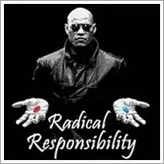
- In Order To Transform Abuse: Shift Into A World Of Radical Responsibility- Matrix Code - SEXABUSE.23- Arrange to have a 2 hour meeting with two other women (if you are a women... do I really have to say this?). Ask them to listen as a - Space, that is, to not make comments, to not make interpretations, and to not try to rescue you. They are to be silent total listeners -- Possibility Listeners- who might feel something as you speak. If they agree to this, then you can proceed.- Your job is to tell the story of a time you were sexually abused. - Who did it to you? - What exactly happened? - What did you feel? - What did you conclude about yourself? About men? About God? About your future? - Why do you think they did it to you? - How did you happen to place yourself in that situation with them that this could possibly happen? - What did they get out of it? - Feel your feelings while, at the same time, split off 10% of - Your Attentionto- Observe Yourselfwhile you are telling this story.- After answering the 7 questions above, stop for 3 minutes of complete silence. Keep looking into your listeners' eyes in this silence. - Here is the - Radical Responsibilitypart of this Experiment: Explain to your listeners how exchanging sexual energy and sexual favors is part of your- Survival Strategy.- Explain in detail how it happened that you figured out - probably with your father or other male relatives - that you could manipulate them and survive, by being sexy, flirting, sexually teasing. - Then explain how, in this incident of sexual abuse, you chose to be sexually abused rather than to die. - Get it how you caused this incident to occur, and how you have used this sexual abuse story for a long time as a way to avoid truly living, standing up, speaking out, taking risks, creating what you came here to create. - Write down this last part step-by-step down in your - Beep! Book - In Order To Transform Abuse: Practice Radical Honesty Regarding What You Want And What You Do Not Want In All 5 Bodies- Matrix Code - SEXABUSE.24 - In Order To Transform Abuse: Do The 'Sexual Space Cleanout' Process- Matrix Code - SEXABUSE.25 - Regarding Your Present Moments: Become The Map Of Possibility- Matrix Code - SEXABUSE.26
- In Order To Transform Abuse: Do The 'Sexual Space Cleanout' Process- Matrix Code - SEXABUSE.25 - Regarding Your Present Moments: Become The Map Of Possibility- Matrix Code - SEXABUSE.26 - Regarding Your Future: Distill Your Bright Principles- Matrix Code - SEXABUSE.27 - In Order To Start Over: Feed Your Gremlin Something Other Than Hatred, Emotional Fear, and Revenge- Matrix Code - SEXABUSE.28
- Regarding Your Future: Distill Your Bright Principles- Matrix Code - SEXABUSE.27 - In Order To Start Over: Feed Your Gremlin Something Other Than Hatred, Emotional Fear, and Revenge- Matrix Code - SEXABUSE.28 - In Order To Transform Abuse: Examine The Purpose Of Your Stories- Matrix Code - SEXABUSE.29 - In Order To Transform Abuse: Take Radical Responsibility For Your Stories- Matrix Code - SEXABUSE.30 - With Regards To Healing Abuse: Sew Up Your Brain Splits- Matrix Code - SEXABUSE.31
- In Order To Transform Abuse: Examine The Purpose Of Your Stories- Matrix Code - SEXABUSE.29 - In Order To Transform Abuse: Take Radical Responsibility For Your Stories- Matrix Code - SEXABUSE.30 - With Regards To Healing Abuse: Sew Up Your Brain Splits- Matrix Code - SEXABUSE.31 - With Regards To Healing Abuse: Connect Directly In With The Worthing Healers- Matrix Code - SEXABUSE.32
- With Regards To Healing Abuse: Connect Directly In With The Worthing Healers- Matrix Code - SEXABUSE.32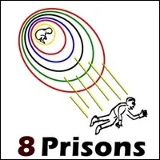
- With Regards To Healing Abuse: Escape From Prison #1: Escape From Your Mother's Belly- Matrix Code - SEXABUSE.33 - With Regards To Healing Abuse: Escape From Prison #2: Escape From Your Father's Control- Matrix Code - SEXABUSE.34 - With Regards To Healing Abuse: Escape From Prison #3: Escape From Your Parents' Household Bubble Of Culture- Matrix Code - SEXABUSE.35 - With Regards To Healing Abuse: Escape From Prison #4: Escape From The School System- Matrix Code - SEXABUSE.36
- With Regards To Healing Abuse: Escape From Prison #2: Escape From Your Father's Control- Matrix Code - SEXABUSE.34 - With Regards To Healing Abuse: Escape From Prison #3: Escape From Your Parents' Household Bubble Of Culture- Matrix Code - SEXABUSE.35 - With Regards To Healing Abuse: Escape From Prison #4: Escape From The School System- Matrix Code - SEXABUSE.36 - With Regards To Healing Abuse: Escape From Prison #5: Escape From Your Birth Country's Beliefs- Matrix Code - SEXABUSE.37 - With Regards To Healing Abuse: Escape From Prison #6: Escape From Your Birth Religion's Beliefs- Matrix Code - SEXABUSE.38 - With Regards To Healing Abuse: Escape From Prison #7: Escape From The Patriarchy- Matrix Code - SEXABUSE.39
- With Regards To Healing Abuse: Escape From Prison #5: Escape From Your Birth Country's Beliefs- Matrix Code - SEXABUSE.37 - With Regards To Healing Abuse: Escape From Prison #6: Escape From Your Birth Religion's Beliefs- Matrix Code - SEXABUSE.38 - With Regards To Healing Abuse: Escape From Prison #7: Escape From The Patriarchy- Matrix Code - SEXABUSE.39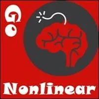
- With Regards To Healing Abuse: Escape From Prison #8: Escape From The Linear Life Plan- Matrix Code - SEXABUSE.40 - With Regards To Transforming Abuse: Practice Being A Person Of Agency- Matrix Code - SEXABUSE.42- No, this is not 'Kill Bill Part 3'. - This is bringing together your Center, Grounding Cord, Bubble, Your Voice, Your Bright Principles, Your Connection With Gaia, Your Pearl, Your Gremlin, Your Teams, Your Listening, Your Speaking, Your Writing, Your Project, etc. into an effective whole. You become a Person Of Agency. - This Experiment is to practice integrating all of these elements into your 5 Bodies of your life. - With Regards To Transforming Abuse: Learn To Consciously Cause And Navigate Transformation- Matrix Code - SEXABUSE.41
- With Regards To Transforming Abuse: Learn To Consciously Cause And Navigate Transformation- Matrix Code - SEXABUSE.41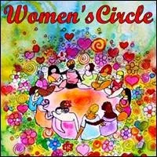
- In Order To Empower Others To Heal And Transform Abuse: Create A Women's Circle Contexted In Radical Responsibility And Possibility Management- Matrix Code - SEXABUSE.42 - What Is Next For You? - Yes, you are starting over. From zero. You get to choose what is next for you. - There is an entire world waiting for healed adult women and men to create next cultures - archearchy - the cultures that are centered around Values that feed and nurture Gaia - Gaian Gameworlds. - For you, this means creating or joining a project. The project will be at the edge or far over the edge of the Standard Human Intelligence Thoughtware (S.H.I.T.) used by modern culture. - Perhaps you are moved now to help others transform abuse, step into adulthood, and start over. - On the other hand, perhaps your Archetypal Lineage and Earth Coincidence Control Office (E.C.C.O.) have other plans for you. So many good gameworlds are Possible. If you create one, others can inhabit it with you.


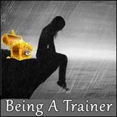
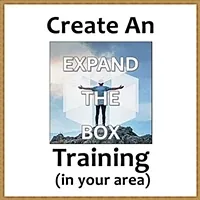
- NOTE:This website is a- Bubble in the Bubble Map- StartOver.xyz- doorway- experiments- upgrade your thoughtware- point of origin- create- possibility- knowledge- about. Your- thoughtware- with. When you- change your thoughtware- liquid state- reorganizes- feelings- emotions- upgrading your thoughtware- build matrix- consciousness (archived — not captured)- low drama- reactivity- collectively build- responsibly- SEXABUSE.00to log your Matrix Point for reading this website on- StartOver.xyz